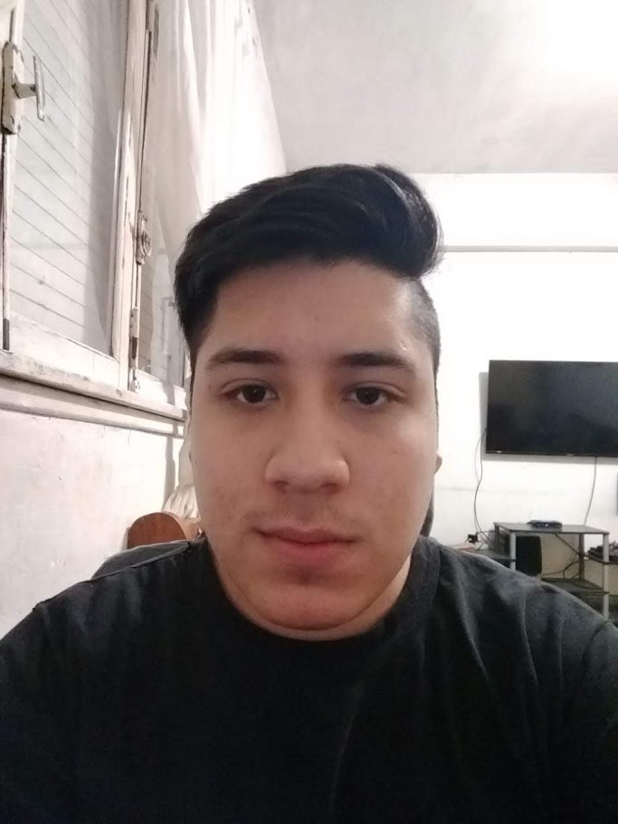
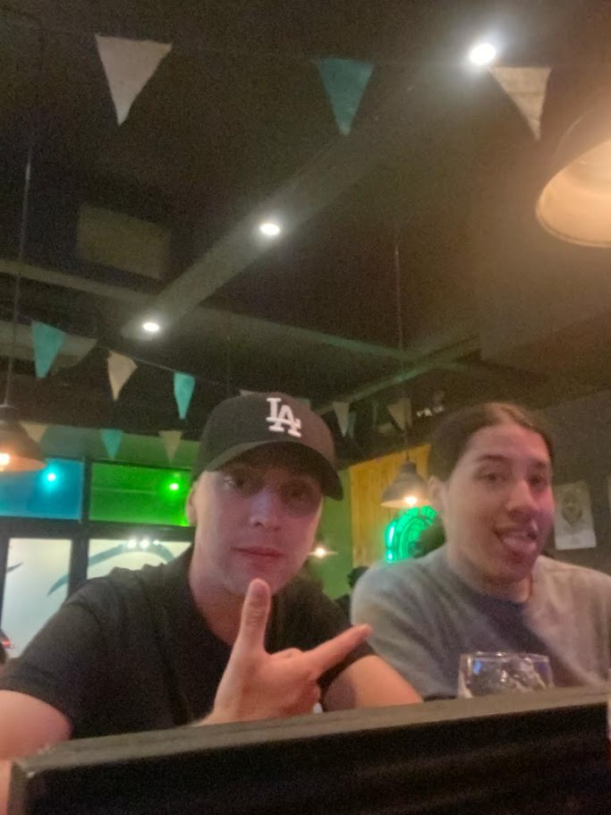
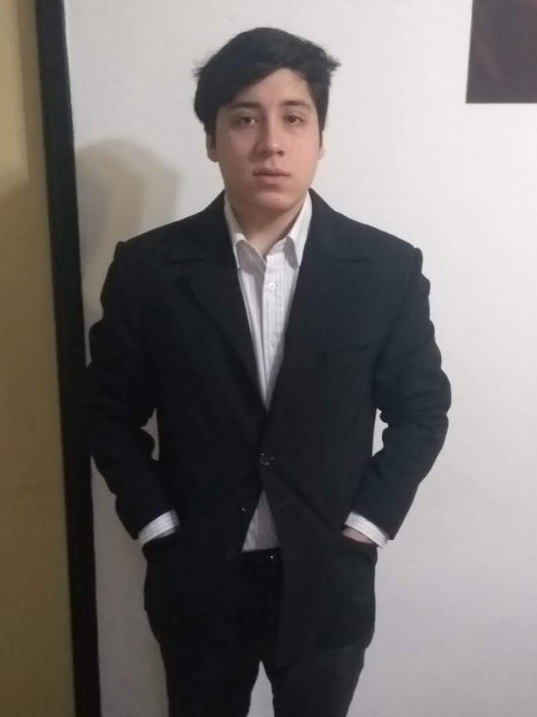
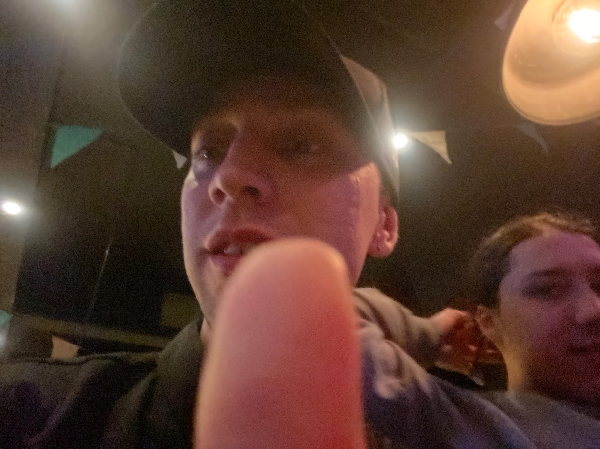

Mi amigo Maxi kiosko golosina es increíble. Es divertido, pero no me di cuenta de cuánto hasta que descubrí su "terrible secreto". Que iba a suceder pronto. Que era real. Entonces pensé en muchas cosas. Cosas en las que no había pensado durante mucho tiempo. Supongo que por culpa de dar nuestra amistad por sentada o algo así.
Quiero decir, los amigos siempre están ahí. Esperas que siempre te acompañen a tomar algo, que te manden memes sin sentido de madrugada o que te cuenten anécdotas exageradas. Ahora no me siento así. Todo es diferente desde que Maxi kiosko golosina recibió su "diagnóstico de pereza extrema crónica" (o cualquier otra broma que quieras poner aquí).
Él no se da cuenta de lo raro que es a veces, pero así le queremos. Creo que realmente no comprende que no todo el mundo soporta sus chistes malos o sus manías extrañas. Así que en ese sentido, nos llevamos bien. Tiene sentido que seamos amigos. Lo que quiero decir es que ya no me importa lo que digan los demás. La conclusión es que es un buen tipo y nadie puede decir que no se preocupa por lo que hace. Realmente quiero asegurarme de que siga aguantándome durante mucho tiempo. Por él, por sus amigos y por mí.
Ha sido una época muy dura en nuestro grupo de amigos desde que pasó lo del incidente EN EL CSGO2 que todos juramos no mencionar. Nunca hemos tenido mucho dinero, pero nos manteníamos hasta que llegaron las facturas de la última fiesta. Él es bastante orgulloso – vale, muy orgulloso – y no quiere la caridad. Esta es la razón por la que estoy haciendo esto. No porque quiero cabrearle o enfadarle, sino porque quiero que tenga una opción para pagar la próxima ronda de cervezas.


